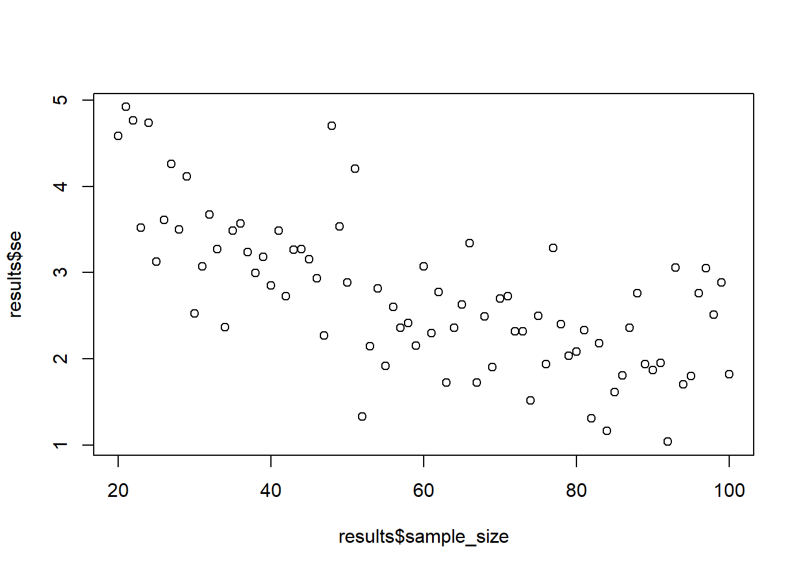

sample(
x = ?,
size = how many samples?
)Exercise I
Overview
This is the first set of exercises where you get familiar with basic commands that you’ll need for data simulation. It’ll make it easier later on when you do more complicated designs to have a good intuition how these commands work.
This part might be boring to you if you’re already a seasoned R user. In that case, I recommend you get a coffee, tea, and/or nap.
After some feedback from a previous iteration of this workshop, I’ll give quite a lot of tips. They’ll come in the form below, and I recommend you ignore them and try it out on your own first:
Expand to get a tip
Tips will appear here, such as:
0.1 Block 1
0.1.1 Exercise
You have three groups. Name the groups, randomly sample ten cases (in total, so uneven numbers per group), and then create a simple data frame that contains a variable for the group called condition.
groups <- letters[1:3]
my_sample <- sample(groups, 10, TRUE)
d <- data.frame(condition = as.factor(my_sample))
Expand to get a tip
First create an object that contains three names (can be anything, but I recommend using letters). Then:
sample(
x = your groups,
size = ten cases,
replace = ?
)Then use data.frame.
0.1.2 Exercise
Same three groups. This time you want each case to have a 70% to be in the first group, a 20% to be in the second group, and a 10% to be in the third group. Get 100 participants (no need for a data frame). Use set.seed(1). How many are in the first group?
set.seed(1)
groups <- letters[1:3]
my_sample <-
sample(
groups,
100,
TRUE,
prob = c(0.7, 0.2, 0.1)
)
sum(my_sample==groups[1])[1] 68
Expand to get a tip
Check ?sample and have a look at the prob argument. You can count how many are in the first group by summing up (sum) the groups or using a table (table).
0.1.3 Exercise
Show that sample with assigned probability (prob = argument) is the same as rbinom. Conduct 10 coin flips with a an unfair coin that has a 60% of landing heads. Remember to set a seed (tip: twice).
set.seed(1)
sample(0:1, 10, replace = TRUE, prob = c(0.4, 0.6)) [1] 1 1 1 0 1 0 0 0 0 1set.seed(1)
rbinom(10, 1, 0.6) [1] 1 1 1 0 1 0 0 0 0 1
Expand to get a tip
Set the seed, then call sample:
sample(
x = head or tails,
size = how many samples?,
replace = ?,
prob = c(0.5, 0.5)
)Then set the seed again and call rbinom. You need 10 “experiments” with only one outcome. Check ?rbinom for the prob argument. 0.5 would give you a 50% chance of getting the outcome.
0.1.4 Exercise
Draw random letters from the alphabet until the alphabet is empty.
sample(letters, length(letters)) [1] "s" "a" "u" "x" "j" "n" "v" "g" "i" "o" "e" "p" "r" "w" "q" "l" "b" "m" "d"
[20] "z" "y" "h" "c" "t" "k" "f"
Expand to get a tip
Tell sample to draw as many letters as there are in the alphabet. Use letters.
0.1.5 Exercise
Draw all letters from the alphabet and explicitly assign the same probability for each letter (tip: repeat the same probability).
probs <- rep(1/length(letters), length(letters))
sample(letters, prob = probs) [1] "r" "v" "o" "n" "w" "b" "l" "t" "s" "k" "y" "i" "f" "c" "e" "j" "q" "u" "m"
[20] "a" "g" "p" "h" "x" "d" "z"
Expand to get a tip
Use the prob argument. You need one probability for each letter. That probability is the same for each letter, so in effect, you can just repeat the probability. If only there were an R command to repeat things.
0.1.6 Exercise
Create a data set. In the data set, each participant has an identifier (called id), a group identifier (condition), and an identifier of what number of measurement we have for this participant (trial). There are 3 participants in each of three groups with 5 trials in each group.
Expand to get a tip
Ultimately, you want to have something of the following form:
id condition trial
1 1 a 1
2 1 a 2
3 1 a 3
4 1 a 4
5 1 a 5
6 2 b 1
7 2 b 2
8 2 b 3
9 2 b 4
10 2 b 5
11 3 c 1
12 3 c 2
13 3 c 3
14 3 c 4
15 3 c 5
16 4 a 1
17 4 a 2
18 4 a 3
19 4 a 4
20 4 a 5
21 5 b 1
22 5 b 2
23 5 b 3
24 5 b 4
25 5 b 5
26 6 c 1
27 6 c 2
28 6 c 3
29 6 c 4
30 6 c 5
31 7 a 1
32 7 a 2
33 7 a 3
34 7 a 4
35 7 a 5
36 8 b 1
37 8 b 2
38 8 b 3
39 8 b 4
40 8 b 5
41 9 c 1
42 9 c 2
43 9 c 3
44 9 c 4
45 9 c 5So first create the groups/conditions. Then decide how many participants you want and how many trials you want. Next, create a data frame:
data.frame(
id = # it should go id number for as many trials as there are: 11111 22222 etc.,
condition = # each id above needs to only have one condition as many times as there are trials: aaaaa bbbbb ccccc aaaaa etc.,
trial = # repeat 12345 as many times as there are participants
)0.1.7 Exercise
You have two groups, a control and a treatment group. In each group, there are 10 participants. Each participant flips a coin 10 times. The control group has a fair coin: 50% heads. The treatment group has an unfair coin: 70% heads. Create a data frame with a participant identifier (id), group membership (condition), and a total head count for that participant (heads). Check that the two groups indeed have different means of how often they get heads (roughly corresponding to the two probabilities)
groups <- c("control", "treatment")
n <- 20
flips <- 10
fair <- 0.5
unfair <- 0.7
probs <- rep(c(fair, unfair), each = n/2)
d <-
data.frame(
id = 1:20,
condition = rep(groups, each = n/2),
heads = rbinom(n, flips, prob = probs)
)
aggregate(d$heads, by = list(d$condition), mean) Group.1 x
1 control 5.4
2 treatment 6.5
Expand to get a tip
I recommend to define your parameters at the beginning (sometimes called declaring your variables or assignment block):
groups <- #?
n <- #?
flips <- #?
fair <- #?
unfair <- #?
probs <- #? (Check how you assigned probabilities for the alphabet exercise above)Then you can create a data frame like you did above, with IDs running from minimum to maximum, the first half having control assignment, the second half having treatment assignment, and a head count with rbinom (which takes the number of experiments, how many flips there are per experiments, and the probability of heads for that experiments; the experiment is each participant).
Then use aggregate or table.
0.1.8 Exercise
You have 100 participants. Each participants reports their age which lies uniformly between 20 and 40. They also report grumpiness on a 100-point scale (with a 10-point SD). Each extra year predicts 0.5 higher grumpiness (Tip: Check the lecture slides; you’ll need to add some error). Create the two variables (no need for a data frame) and conduct a correlation with cor. What’s the correlation?
n <- 100
age <- runif(n, 20, 40)
grumpiness <- age*0.5 + rnorm(n, 100, 10)
cor(age, grumpiness)[1] 0.2127516
Expand to get a tip
Go to slide 29 here and replace the error (norm) with the one specified.
0.1.9 Exercise
We track how many calls you get during this exercise. Nobody calls anymore, so there’ll be very few. Create a data frame with 20 participants, a participant number and the number of calls per participant. Plot the calls and show that 0 is the most common value.
n <- 20
d <- data.frame(
id = 1:n,
calls = rpois(n, 0.5)
)
plot(density(d$calls))
Expand to get a tip
Create a data frame with an id variable running from 1 to 20, then call rpois and play around with the lambda parameter until plot(density(dataframe$calls)) shows a spike at zero.
0.1.10 Exercise
Professors get more calls. Add 20 more participants who have much higher call numbers. Also include a condition variable that marks whether participants are students (first 20 people) or professors (new 20 people). Conduct an independent sample t-test (t.test) and also plot the different groups as a boxplot.
d <- rbind(
d,
data.frame(
id = n+1:2*n,
calls = rpois(n, 3)
)
)
d$condition <-
rep(c("students", "profs"), each = 20)
t.test(d$calls ~ d$condition)
Welch Two Sample t-test
data: d$calls by d$condition
t = 5.8023, df = 26.202, p-value = 3.989e-06
alternative hypothesis: true difference in means between group profs and group students is not equal to 0
95 percent confidence interval:
1.679272 3.520728
sample estimates:
mean in group profs mean in group students
3.25 0.65 boxplot(d$calls ~ d$condition)
Expand to get a tip
Create a second data frame that has an id variables that runs from 21 to 40 as well as a calls variable that indicates the number of calls like you did before. Then use rbind to combine the data frame with the students with the data frame you just created. Add a condition variable:
d$condition <-
rep(c("students", "profs"), ?)Now run a t-test and a boxplot (boxplot).
0.2 Block 2
In this section, you’ll use the basics from above to perform your first power analysis. You’ll apply repeated simulations over a range of values and extract and store results to summarize them.
0.2.1 Exercise
There are four groups. Each group comes from a different normal distribution. The means are c(100, 105, 107, 109). The SDs are c(9, 12, 10, 17). Each group should be 20 cases. Store the scores in a data frame and have a variable that indicates the group. Tip: Remember that R uses vectors, even for arguments in a function.
means <- c(100, 105, 107, 109)
sds <- c(9, 12, 10, 17)
n <- 20
d <-
data.frame(
group = rep(c(letters[1:4]), times = n),
score = rnorm(n*4, means, sds)
)
Expand to get a tip
means <- ?
sds <- ?
n <- ?
d <-
data.frame(
group = rep(c(letters[1:4]), ?), # make sure condition matches how the score below is drawn
score = rnorm(n*4, means, sds)
)0.2.2 Exercise
You need 5 samples. Each sample contains 10 unique letters from the alphabet. (Use replicate.)
replicate(5, sample(letters, 10)) [,1] [,2] [,3] [,4] [,5]
[1,] "o" "u" "p" "l" "e"
[2,] "p" "e" "g" "j" "w"
[3,] "q" "l" "z" "a" "f"
[4,] "s" "c" "q" "f" "s"
[5,] "n" "r" "k" "q" "t"
[6,] "f" "n" "i" "m" "l"
[7,] "k" "m" "h" "b" "c"
[8,] "h" "o" "m" "o" "d"
[9,] "e" "b" "f" "d" "o"
[10,] "b" "t" "x" "z" "n" 0.2.3 Exercise
Same as before, but this time you need 10 cases from a normal distribution with a mean of 10 and an SD of 2. Use replicate first, then a for loop.
replicate(5, rnorm(10, 10, 2)) [,1] [,2] [,3] [,4] [,5]
[1,] 10.629034 10.077856 10.916251 11.087316 8.782663
[2,] 10.444436 10.029294 7.095943 12.082121 9.397606
[3,] 8.312769 9.627366 10.154685 10.395012 11.952405
[4,] 10.887611 12.801182 11.119791 6.740843 10.912017
[5,] 10.111594 10.036971 9.850107 10.242080 12.588816
[6,] 10.135945 10.498392 11.565395 6.725156 7.733596
[7,] 9.596077 10.298441 9.654663 8.937914 8.261079
[8,] 7.683969 8.073534 7.897412 11.907360 8.490059
[9,] 8.814513 9.867066 11.458903 6.558699 9.740729
[10,] 11.532131 12.573844 10.525330 10.212641 7.996397for (i in 1:5) {
print(rnorm(10, 10, 2))
} [1] 8.360263 8.050895 11.208619 11.097575 11.832865 15.323133 9.639486
[8] 11.370030 16.532829 11.121201
[1] 9.861965 8.055114 8.906827 6.622615 6.855255 9.190026 10.638573
[8] 10.080855 9.219981 6.361556
[1] 11.318361 10.919243 13.233253 6.287619 9.426352 13.500644 10.232827
[8] 12.768506 11.148442 10.272982
[1] 11.828432 6.398347 9.320239 11.212529 12.682261 11.534575 10.387451
[8] 12.281133 10.027730 7.789388
[1] 9.949675 9.672653 10.740119 9.238351 11.305905 14.122684 6.406710
[8] 11.168154 8.554494 8.741671
Expand to get a tip
replicate(?, rnorm(?, ?, ?))
for (i in 1:5) {
print(rnorm(?, ?, ?))
}0.2.4 Exercise
Assume we know the population mean in height (168cm) and its standard deviation (20). Assume we draw 10,000 samples from this distribution. Each sample has 50 participants. The standard deviation of these 10,000 sample means is the standard error.
Simulate the standard error and compare it to the theoretical value: \(SE = \frac{\sigma}{\sqrt{n}}\). (\(\sigma\) is the standard deviation of the population.)
n <- 50
mu <- 168
sd <- 20
se <- sd / sqrt(n)
means <- NULL
draws <- 1e5
for (i in 1:draws) {
means[i] <- mean(rnorm(n, mu, sd))
}
cat("The real SE is:", round(se, digits = 2), ". The simulated SE is:", round(sd(means), digits = 2), ".")The real SE is: 2.83 . The simulated SE is: 2.83 .# with replicate
means <-
replicate(
draws,
rnorm(n, mu, sd)
)
sd(colMeans(means))[1] 2.827195
Expand to get a tip
Like we did earlier, first declare your variables:
n <- ?
mu <- ? # mu is the greek value for the true mean in the population
sd <- ?
se <- sd / sqrt(n) # calculating standard error
means <- NULL # somewhere to store the means in
draws <- 1e5 # how many samples?Then we iterate over the number of samples, generate that sample, and take its mean.
for (i in 1:draws) {
current_sample <- rnorm(?, ?, ?)
current_mean <- mean(current_sample)
# store
means[?] <- current_mean
}Now you can compare the SD of means with the standard error.
0.2.5 Exercise
Same population. Draw 1,000 observations for each sample size between 20 and 100. Calculate the standard error for each sample size (like you did above by taking the SD of sample means) and plot it against the sample size. (Tip: You’ll need to iterate over two things.)
mu <- 168
sd <- 20
draws <- 1e3
min_sample <- 20
max_sample <- 100
results <-
data.frame(
sample_size = NULL,
se = NULL
)
for (i in min_sample:max_sample) {
sample_means <- NULL
for (j in 1:draws) {
sample_means[j] <- mean(rnorm(i, mu, sd))
}
se <- sd(sample_means)
results <- rbind(
results,
data.frame(
sample_size = i,
se = se
)
)
}
plot(results$sample_size, results$se)
Expand to get a tip
Like we did earlier, first declare your variables and generate an object in which to store the results:
mu <- ?
sd <- ?
draws <- ? # how many draws are we doing?
min_sample <- ?# minimum sample size
max_sample <- ? # maximum sample size
# container
results <-
data.frame(
sample_size = NULL,
se = NULL
)Then we iterate over the sample size, and for each sample size do 1,000 “draws”, then store the results for that sample size.
for (i in min_sample:max_sample) { # the sample sizes we want to iterate over
sample_means <- NULL # somewhere to store the means for each of the 1,000 samples we'll do for this sample size
for (j in 1:draws) { # second loop where we draw 1,000 samples for each sample size
sample_means[?] <- mean(rnorm(?, ?, ?)) # store the mean of this sample
}
se <- sd(?) # once we're done with 1,000 draws, we need to get the SD of the sample means of this sample size
# store the results
results <- rbind(
results, # the previous results
data.frame( # a new data row
sample_size = ?, # what sample size did we do in this iteration of the loop? Where is it stored?
se = ? # you calculated this above
)
)
}That’s it, you can plot the results with plot(results$sample_size, results$se).
0.2.6 Exercise
Turn the above into a function so that you can change the population effect size, SD, number of simulations, and sample size range. The function should also return the plot from above.
sample_against_se <-
function(
mu = 168,
sd = 20,
draws = 1e3,
min_sample = 20,
max_sample = 100
) {
results <-
data.frame(
sample_size = NULL,
se = NULL
)
for (i in min_sample:max_sample) {
sample_means <- NULL
for (j in 1:draws) {
sample_means[j] <- mean(rnorm(i, mu, sd))
}
se <- sd(sample_means)
results <- rbind(
results,
data.frame(
sample_size = i,
se = se
)
)
}
return(plot(results$sample_size, results$se))
}
Expand to get a tip
You basically do the variable declaration inside function(), then copy-paste everything else into the body of the function:
sample_against_se <- # or whatever function name you want
function( # this should look familiar
mu = ?,
sd = ?,
draws = ?,
min_sample = ?,
max_sample = ?
) {
# here you put everything from above in here
results <-
data.frame(
sample_size = NULL,
se = NULL
) #etc.
# then don't forget to return
return(plot(results$sample_size, results$se))
}0.2.7 Exercise
Try out the function with two plots: when the population SD is 5 and when you do 10 draws. What changes?
sample_against_se(sd = 5)
sample_against_se(draws = 10)
0.2.8 Exercise
The average height of men in Spain is 173cm (says Wikipedia). The population standard deviation is probablay around 7cm (source).
You draw a sample of men and want to test whether they’re significantly different from that mean (our H0). In fact, these men you have sampled are truly French (175.6cm, our true “effect size”). In other words, can we reject the null hypothesis that these men we sampled come from the Spanish distribution in favor of our alternative hypothesis that the true population value is greater than the Spanish population mean?
You calculate the z-statistic, which is calculated as follows: \(\frac{\bar{X} - \mu_0}{\sigma/\sqrt{N}}\) This simply tells us how far from the population mean (well, the suspected population mean under the null hypothesis) our sample mean is in terms of standard errors. \(\bar{X}\) is the sample mean, \(\mu_0\) is the population mean under H0, \(\sigma\) is the population standard deviation, and \(N\) is the sample size.
Then we can look up the z-score to see what the probability is to score this high or higher (does that definition ring a bell?). In R, you can simply do that with a built-in function: pnorm(). For example, if we have a z-score of 1.645, our probability of obtaining such a value (or higher) is pnorm(1.645, lower.tail = FALSE) = 0.0499849 – our p-value for a one-sided test.
We can simulate the power of our statistical test (in this case, the z-statistic). Take a sample of 30 people from the French population, calculate the z-statistic, its p-value, and store the p-value. Do this 1,000 times. Plot the distribution of p-values. What can we conclude about the sample size?
# sample size
n <- 30
h0 <- 173 # test against this null
h1 <- 175.6 # true population effect
sd <- 7
alpha <- 0.05
draws <- 1e3
pvalues <- NULL
for (i in 1:draws) {
d <- rnorm(n, h1, sd)
z <- (mean(d) - h0) / (sd / sqrt(n))
pvalues[i] <- pnorm(z, lower.tail = FALSE)
}
plot(density(pvalues))
Expand to get a tip
This all is much easier than it appears at first sight. Start with declaring your variables:
n <- ? # sample size
h0 <- ? # test against this null (read the description again to know which height is the null)
h1 <- ? # true population effect (true height)
sd <- ? # population SD
draws <- ? # how many draws?Now you do what you’ve been doing this whole time: Use a loop to draw a sample, then calculate the z statistic (this could be any statistical test), extract the p-value for that z-statistic (or p-value for any statistical test), and store the p-value somewhere.
# somewhere to store pvalues
pvalues <- NULL
# then our loop
for (i in 1:draws) {
d <- rnorm(?, ?, ?) # get a sample with the variables you declared above
z <- # translate the formula above into R code (?sqrt)
pvalues[?] <- ? # get the p-value with the code from the exercise instructions, but replace 1.645 with the z-value you calculated
}That’s it. Have a look at how the p-values are distributed with plot(density(pvalues)).
0.2.9 Exercise
Now calculate the proportion of p-values that are below 0.05. That’s your power: The proportion of tests that will detect that there’s a true effect. In our case, that effect is a difference of 2.6cm. (Tip: Count or sum how many p-values are below 0.05 and divide by total number of p-values).
sum(pvalues < 0.05)/length(pvalues)[1] 0.6680.2.10 Exercise
Now let’s do what we did before: Put the loop from above inside another loop that iterates over different sample sizes. Then put that all into a function that let’s you set the parameters of interest (sample size range, h0, h1, etc.). Then simulate power (1,000 simulations each) for samples between 30 and 100. Plot the sample size against power.
power_function <-
function(
h0 = 173,
h1 = 175.6,
sd = 7,
alpha = 0.05,
draws = 1e3,
min_sample = 30,
max_sample = 100
) {
results <-
data.frame(
sample_size = NULL,
power = NULL
)
for (i in min_sample:max_sample) {
pvalues <- NULL
for (j in 1:draws) {
d <- rnorm(i, h1, sd)
z <- (mean(d) - h0) / (sd / sqrt(i))
pvalues[j] <- pnorm(z, lower.tail = FALSE)
}
results <- rbind(
results,
data.frame(
sample_size = i,
power = sum(pvalues < 0.05)/length(pvalues)
)
)
}
return(plot(results$sample_size, results$power, type = "l"))
}
power_function()
Expand to get a tip
You basically do the variable declaration inside function() like you’ve done before, then copy-paste everything else into the body of the function:
power_function <- # name as you please
function(
h0 = ?, # assign default values or scratch the "= ?" part
h1 = ?,
sd = ?,
alpha = ?,
draws = ?,
min_sample = ?, # the minimum sample size
max_sample = ? # the maximum sample size
) {
# create a data frame to store results in
results <-
data.frame(
sample_size = NULL,
power = NULL
)
# first loop
for (i in min_sample:max_sample) {
# store pvalues for each sample size
pvalues <- NULL
# second loop
for (j in 1:draws) {
# do what you did above and store all pvalues for each draw in `pvalues`
}
# add the results for this sample size (aka pvalues)
results <- rbind(
results,
data.frame(
sample_size = ?,
power = ? # proportion of pvalues under 0.05
)
)
}
# don't forget to return the plot
return(plot(results$sample_size, results$power, type = "l"))
}
# call the function
power_function()0.2.11 Exercise
Now do the same thing with a one-sample t-test. (Tip: You only need to replace the z-scores with a t.test from which you can extract the p-value). (Another tip: Use the $ sign on where you stored the t-test results.)
power_function_t <-
function(
h0 = 173,
h1 = 175.6,
sd = 7,
alpha = 0.05,
draws = 1e3,
min_sample = 30,
max_sample = 100
) {
results <-
data.frame(
sample_size = NULL,
power = NULL
)
for (i in min_sample:max_sample) {
pvalues <- NULL
for (j in 1:draws) {
d <- rnorm(i, h1, sd)
t <- t.test(d, mu = h0,alternative = "greater")
pvalues[j] <- t$p.value
}
results <- rbind(
results,
data.frame(
sample_size = i,
power = sum(pvalues < 0.05)/length(pvalues)
)
)
}
return(plot(results$sample_size, results$power, type = "l"))
}
power_function()
Expand to get a tip
Instead of calculating the z-value yourself, you run t.test(data, mu = null hypothesis value, alternative = "greater"), then extract the p-value with t.test$p.value. All you need is to change the code from above by two lines.
0.2.12 Exercise
Just for funsies (and for our next session), see what happens when the true effect is only 1cm in difference.
power_function_t(h1 = h0+1)